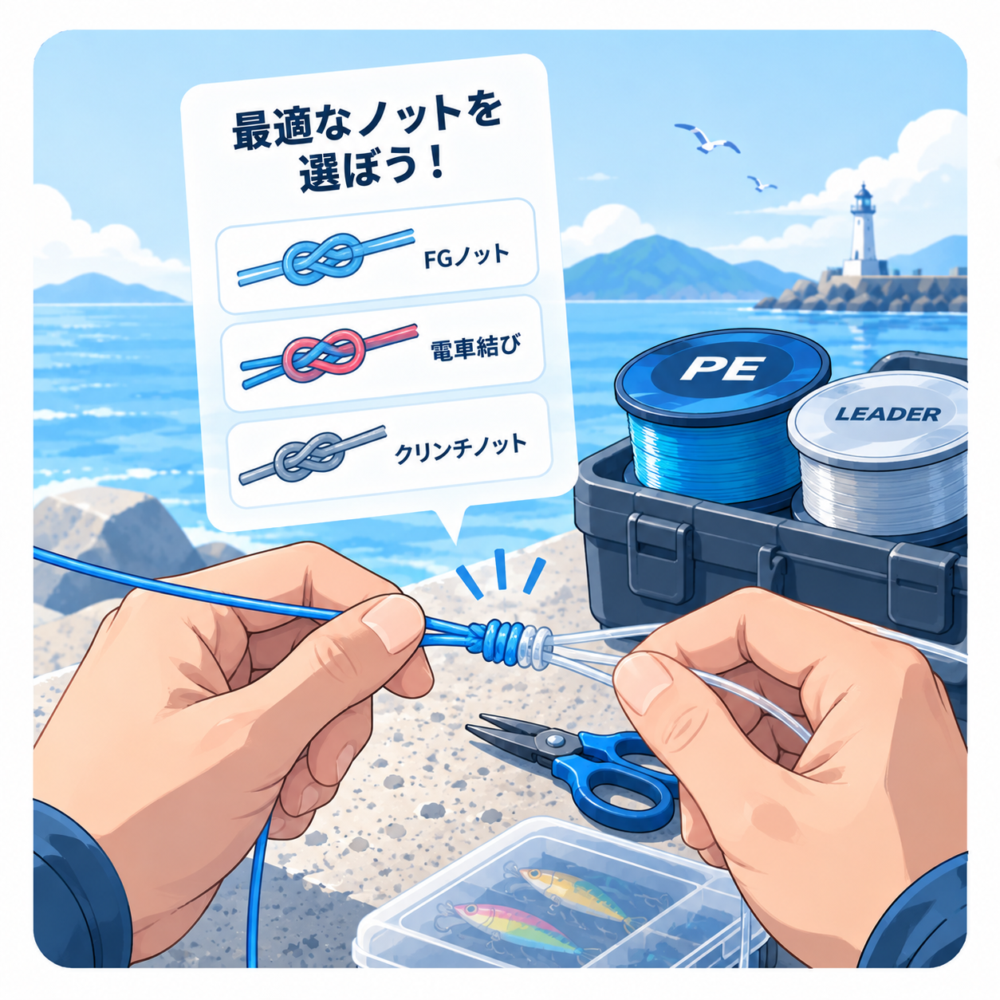

FISHING KNOT SELECTOR
ノット選択ナビ
ノット名を知らなくても大丈夫。結ぶものと優先したいことから、まず覚えたい結び方を提案します。

ノットの条件を選択
1 / 3
釣りのノットとは？
釣り糸同士や、糸と金具・針をつなぐ結び方です。全部を覚える必要はありません。まずは「PEとリーダー用に1つ」「スナップやルアー用に1つ」から始めましょう。
なぜ結び方が重要？
ラインが十分に強くても、結び目が正しく作られていないと抜けたり切れたりします。結束状態はライン製品、太さ、締め込み、摩擦、劣化によって変わるため、固定の強度を保証することはできません。
PEとリーダーを直接結ぶ理由
PEラインは滑りやすく、擦れに弱い性質があります。先端へフロロカーボンなどのリーダーを結ぶことで、根ズレへの備えとルアー・スナップへの接続をしやすくします。
結んだ後に確認するポイント
- 結び目を湿らせ、ゆっくり確実に締め込む
- 巻き付けの重なりや締め不足がないか確認する
- 余分なラインを結び目に合わせて適切に処理する
- 釣行中も傷や緩みを確認し、傷んだら結び直す
よくある失敗
難しいノットを釣り場で初めて試す
FGやPRは事前練習が必要です。自宅で安定して作れるようになるまでは、用途に合う簡単な代替候補も準備してください。
強く締めれば大丈夫だと思う
乾いたまま急に締めると、摩擦熱でラインが傷む場合があります。公式手順を確認し、湿らせてゆっくり締めてください。
どの針にも同じノットを使う
このツールの「ライン＋針」はアイ付き針が対象です。輪のない針には外掛け結びなど、別の結び方が必要です。